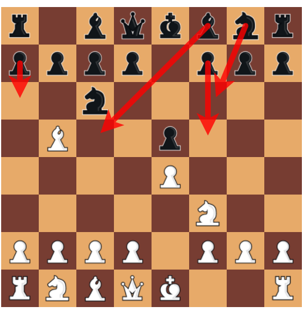
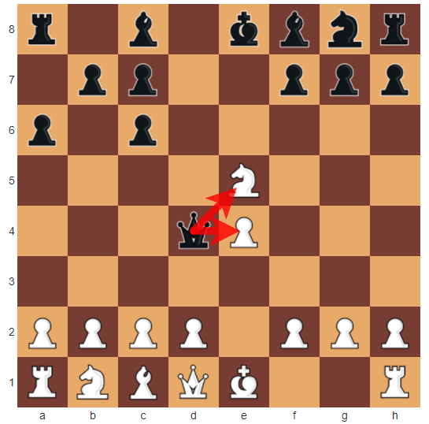
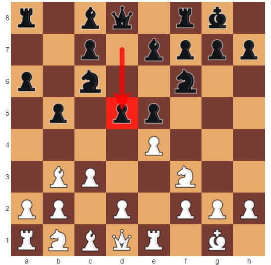

Ruy Lopez Opening – Plans and Strategies
The next opening we are going to learn about is the Spanish Opening in chess, also known as the Ruy Lopez. The Ruy Lopez name is named after 16th-century Spanish priest Ruy Lopez de Segura. The Spanish opening is one of the principled openings we teach to beginners, as the emphasis is on controlling the center, piece development, and early King safety. It’s very similar to the Italian Opening, as the same principles are applied there. The difference between the Italian and the Spanish is that the Bishop develops to c4 in the Italian opening, but the Bishop goes to b5 in the Spanish. The opening moves for the Spanish Opening are 1. e4, e5 2. Nf3, Nc6 3. Bb5.
Spanish Opening In Chess: The Main Line
As mentioned previously, we’re going to be focusing on the mainline and main ideas, and we will be slowly branching out of that as it fits. The idea behind Bb5 by White is that White is pressuring e5 by pressuring the Knight on c6, which defends the pawn on e5. Note, however, say Black plays a6, Bxc6 does not win a pawn, because of dxc6, Nxe5, Qd4!
The Marshall Gambit
The Marshall Gambit occurs after the moves 1. e4, e5 2. Nf3, Nc6 3. Bb5, a6 4. Ba4, Nf6 5. O-O, Be7 6. Re1, b5 7. Bb3, O-O 8. c3. The most common move is d6, with the idea to play Bg4 with solid development. However, Black also has the option to unleash the potent Marshall Gambit with 8… d5.
